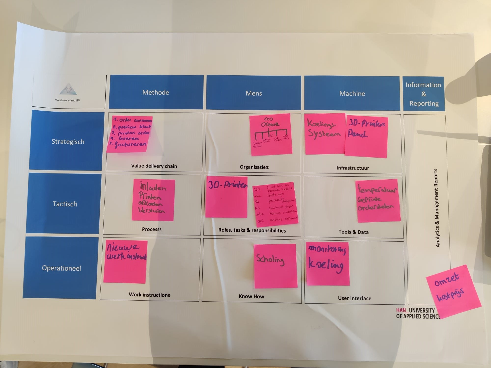
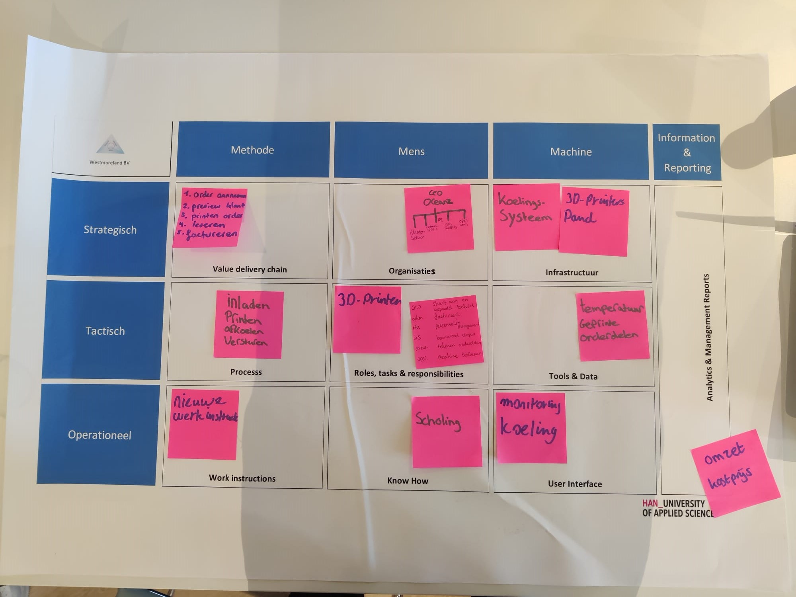

Kennismaking
Bij het vak smart business hebben we lessen gehad om elkaar beter te leren kennen en kennis op te doen over hoe bedrijven in elkaar zitten. Ook hebben we modellen leren kennen die helpen om dieper in een bedrijf te kijken.
Op het begin hebben we een beeld geschetst wat elke student kan bieden en wat iedereen wil leren. Hierdoor kwam ik erachter dat ik bijvoorbeeld bij Frank, Kaan, Brian of Bram kan aankloppen om vragen te stellen over de technische vakken. Zelf kan ik anderen helpen met vragen over project management/business modellen en hoe te communiceren met een opdrachtgever tijdens een project.
AXA casus
We hebben een workshop gehad van Geert over het Business Model Canvas.
Dit model heb ik al leren kennen tijdens mijn bachelor, dus in deze les heb ik voornamelijk andere studenten geholpen met het invullen van het BMC aan de hand van een casus van AXA.
Het uitleggen was niet heel makkelijk aangezien een aantal onderwerpen van het BMC vrij dicht bij elkaar liggen en om dan duidelijke voorbeelden te noemen was best lastig.
Ik heb geleerd dat uitleggen van het praktisch toepassen van een model best lastig is en dat het kan helpen om voorbeelden van mijn eigen studie toe te lichten.
Door dat te doen kwamen we op ideeën en vanuit daar hebben we het BMC kunnen invullen.


ELK Wijchen
We hebben ook een bedrijfsbezoek gehad bij ELK in Nijmegen.
Dit was een leerzame dag aangezien ik nog niet eerder bij een bouwbedrijf was geweest.
We kregen een presentatie over LEAN/Scrum en een rondleiding door het bedrijf.
LEAN/Srum kende ik al en daardoor was het mooi om te zien hoe het in de praktijk wordt toegepast met bijvoorbeeld een daily stand up meeting.
Het was bijzonder om te zien dat zij daar zelf een aparte ruimte voor ingericht hebben.
Door deze dag heb ik een duidelijke beeld gekregen van een bouwbedrijf en gezien hoe Scrum er in de praktijk uitziet.
TOM model
In een workshop van Paul Kalis heb ik het TOM model leren kennen.
Tijdens de les gaf hij eerst een duidelijke en fisuele uitleg over het model, waarop wij vervolgens de opdracht kregen om het in te vullen voor Oceanz.
Ik vond het zeer interressant om erachter te komen hoe je nog verder een bedrijf kan leren kennen door dieper in te zoomen op de onderdelen van een BMC.
Het was verhelderend om dit te doen voor Oceanz, aangezien er daardoor vragen naar boven kwamen die wij als groepje hebben kunnen stellen bij het eerste gesprek met Erik van der Garde. Hier waren we zonder het TOM model niet op uit gekomen.
De les was extra leuk doordat Paul het met overtuiging en interesse vertelde.
Complimenten daarvoor!!
 

| Competenties | |
|---|---|
| Je toont veel initiatief en betrokkenheid. | Ik ben bij alle lessen aanwezig geweest en heb bij de workshop van Paul Kalis het initiatief genomen om samen met mijn groepje onze BMC te presenteren aan de klas. |
| Je meningen en adviezen zijn gebaseerd op gedegen onderzoek. | Met de casus van AXA heb ik informatie verzameld via de site van AXA en om het BMC voor Oceanz in te vullen heb ik via de site en tijdens de presentatie van Erik Van der Garde informatie opgehaald. |
| Je kiest ambitieuze leerdoelen en verkent disciplines buiten je eigen vakgebied. | Alle onderdelen die zijn behandeld tijdens de lessen waren voor mij bekend. Hierdoor ik heb geen disciplines buiten mijn vakgebied verkent, maar heb ik voornamelijk geleerd hoe je het beste uitleg kan geven over businessmodellen aan een student die er nog nooit mee gewerkt heeft. Dit was moeilijker dan gedacht, aangezien businessmodellen best ingewikkeld kunnen zijn met onderdelen die veel op elkaar lijken. Bijvoorbeeld de key activities en resources in het BMC. |
| Je bent bewust bezig met je persoonlijke groei. | Ik was actief in de lessen en in de workshop van Paul Kalis heb ik veel geleerd door feedback aan hem te vragen over de invulling van het TOM model van Oceanz. |
| Je gebruikt feedback en zelfreflectie om te leren. | Ik heb tijdens de groepsopdracht bij ELK feedback ontvangen van mijn groepsgenoten, dat ik mijn werktempo soms mag verlagen. Ik wil graag snel werken en ben het liefst eerder klaar dan nodig, maar daardoor verliep de communicatie tijdens de opdracht niet vlekkeloos doordat een aantal studenten al bezig waren met het maken van de presentatie maken en anderen moesten zich nog verdiepen het onderwerp. |
| Je helpt actief anderen te groeien. | Ik heb andere studenten geholpen met het invullen van een BMC en TOM model. |